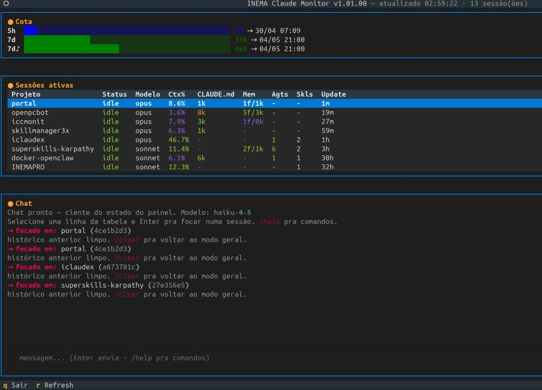

iccmonit roda num terminal separado e mostra em tempo real cota 5h/7d/7d-Sonnet, contexto e custo de cada sessão ativa, máquina, processos, serviços — e traz um chat embutido que já sabe o que está acontecendo no painel.
Pensado pra ficar aberto lado a lado com as sessões — sem precisar alternar de terminal pra saber quanto de cota sobrou ou qual sessão está pesada.
Barras de janela 5h, semanal e semanal-Sonnet lidas do mesmo cache (/tmp/cc_limits_<uid>.json) que o statusline padrão do Claude Code usa — não recalcula localmente, então não diverge do valor real.
Uma linha por sessão viva (ou morta, com a): projeto, status idle/busy, modelo, % de contexto, tamanho do CLAUDE.md, memória, agentes lançados e skills invocadas.
Chat lateral (Haiku por padrão) que recebe o snapshot do painel como contexto — ou, ao focar numa sessão, o transcript dela — com comandos como /diag e /docker.
Cada fonte é lida direto do que o próprio Claude Code (ou o SO) já mantém — sem reimplementar cálculo de cota.
Leitura de transcripts grandes, nvidia-smi, docker ps etc. roda numa worker thread — a TUI não congela, valores antigos ficam na tela até o novo lote chegar.
O sessionId em session.json congela no boot; após /clear o monitor passa a seguir o arquivo de mtime mais novo em ~/.claude/projects/<encoded-cwd>/.
textual-serve empacota a mesma TUI num WebSocket + xterm.js, sem mudar código — útil pra acompanhar de outra máquina ou via túnel SSH.
Linux ou macOS (testado em Linux), Python 3.10+ e o Claude Code já logado nessa máquina.
Interpretador disponível no PATH.
# confirma versão python3 --version
Precisa de ~/.claude/.credentials.json válido — é dali que vem o OAuth do chat.
# se ainda não logou claude login
É ele que popula /tmp/cc_limits_<uid>.json com a cota oficial. Sem isso o painel de cota fica vazio.
# nada a instalar — vem com o Claude Code ls /tmp/cc_limits_*.json
As dependências (textual, anthropic, textual-serve) são instaladas automaticamente pelo start.sh se faltarem.
Clona e dá permissão de execução ao entrypoint.
git clone git@github.com:inematds/iccmonit.git
cd iccmonit
chmod +x start.sh
O start.sh instala sozinho na primeira vez, mas dá pra adiantar.
pip install textual anthropic --break-system-packages # modo terminal pip install textual-serve --break-system-packages # modo web (extra)
Abre a TUI no terminal atual — ideal lado a lado com as sessões Claude Code.
./start.sh
Empacota a mesma TUI num WebSocket + xterm.js no navegador. Bind padrão é só local; lan expõe pra sub-rede (sem autenticação — use com cuidado, ou prefira túnel SSH pra acesso remoto).
./start.sh web # 127.0.0.1:8000 — só este host ./start.sh web 9000 # porta custom ./start.sh web 8000 lan # IP da LAN auto-detectado ssh -L 8000:localhost:8000 usuario@maquina # acesso remoto seguro
Duas colunas redimensionáveis (50/50 por padrão): painéis de Cota/Máquina/Processos/Sessões à esquerda, Chat à direita.
| Tecla | Ação |
|---|---|
r | Refresh manual |
a | Sessões ativas ↔ todas (vivas + mortas) |
p / v | Liga/desliga painel Processos / Serviços |
1–5 | Abre Cota / Máquina / Processos / Sessões / Serviços em fullscreen |
, . = | Redimensiona colunas (encolhe / aumenta / reseta 50/50) |
q | Sair (ou fecha modal com Esc) |
Modo geral responde sobre o painel inteiro; selecione uma linha da tabela de sessões (↑/↓ + Enter) pra focar o chat no transcript daquela sessão.
/diag # diagnóstico — só o que está 🟡/🔴, com sugestão de skill /skills # session-statusline / memory-audit / session-handoff /docker # lista containers, ou "/docker <nome> start|stop|restart|logs" /clear # volta ao modo geral
Cota, sessões e chat focado, tudo na mesma tela.

V1 é só leitura — observa transcripts e cota sem interferir nas sessões.
claude --resume paralelo). Sem API oficial pra isso hoje.